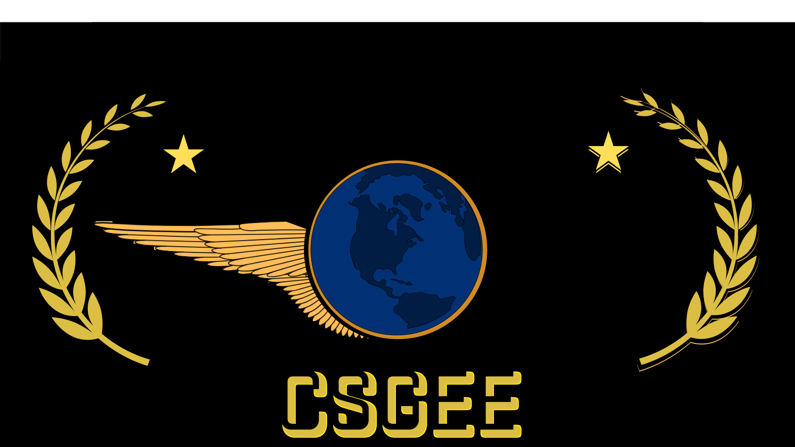

A história do icônico jogo Counter-Strike teve início quando Minh Le, um estudante de Ciência da Computação, descobriu o jogo Quake, um popular FPS (First Person Shooter) ou jogo de tiro em primeira pessoa. Fascinado pelo jogo, Minh Le decidiu criar um Mod, uma modificação não oficial que adiciona novo conteúdo ao jogo, para simular operações de fuzileiros navais chamada de Navy SEALs.
No entanto, quando Minh Le estava desenvolvendo seu Mod, o jogo Quake 2 foi lançado. Ele então obteve o kit de desenvolvimento do novo jogo e desenvolveu um novo Mod chamado Action Quake. Esse Mod foi amplamente aceito e amado pela comunidade, e a empresa responsável pelo Quake 2 entrou em contato com Minh Le, informando que seu Mod foi selecionado para um pacote oficial de Mod's do Quake 2, dessa forma tanto o Mod quanto Minh Le estavam cada vez mais reconhecido pela comunidade de desenvolvedores de Mod’s e pelos jogadores.
Enquanto continuava seus estudos em Ciência da Computação, Minh Le continuou desenvolvendo Modificações para jogos que ele gostava, nessa jornada ele conheceu outro grande desenvolvedor de Mod’s chamado Jess Cliffe. Com o recente lançamento da Valve, o jogo Half-Life foi um grande sucesso, Minh Le e Jeff Cliffe ficaram muito interessados no jogo e então começaram a desenvolver um novo Mod para esse jogo, que será chamado de Counter-Strike.
Em meados de 1999, a primeira versão do Counter-Strike foi lançada e alcançou um sucesso estrondoso. Minh Le até abandonou sua faculdade para se dedicar completamente ao desenvolvimento do jogo, que era constantemente aprimorado por ele e Cliffe. O jogo passou por um longo período de desenvolvimento Beta, com 19 versões beta, antes de ter seu lançamento oficial em 2000.
Com o lançamento da primeira versão, a VALVE, criadora do Half-Life, percebeu o enorme potencial do jogo e viu uma oportunidade. A VALVE obteve a autorização para comercializar o Mod como uma extensão ou DLC do Half-Life. O lançamento comercial foi um sucesso e o jogo ganhou reconhecimento mundial. Minh Le e Jess Cliffe foram contratados pela VALVE como desenvolvedores oficiais do Counter-Strike.
Mais tarde, mais especificamente em setembro de 2003, a VALVE decidiu lançar a plataforma de jogos online chamada Steam, o que impulsionou ainda mais as vendas do Counter-Strike e o tornou popular em todo o mundo. O jogo continua sendo jogado por milhões de pessoas e recebe constantes atualizações e melhorias da equipe de desenvolvimento da VALVE.
Após isso, três novos jogos da franquia Counter-Strike foram lançados, são eles:
Foi anunciado que em meados de 2023 será lançado a nova versão do Counter-Strike: Global Offensive, com uma grande atualização nos motores gráficos, a atualização será chamada de Counter Strike 2.